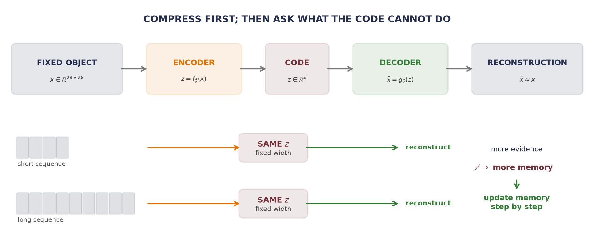
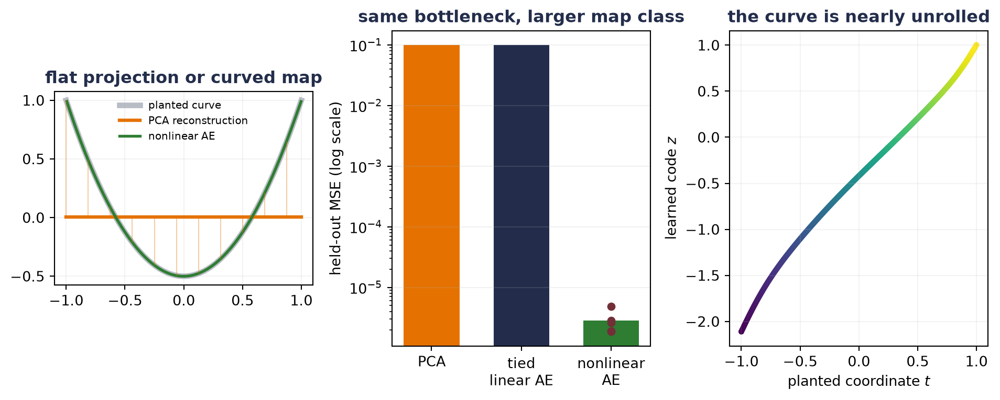
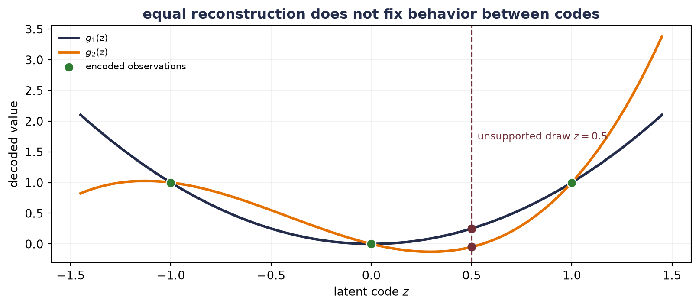
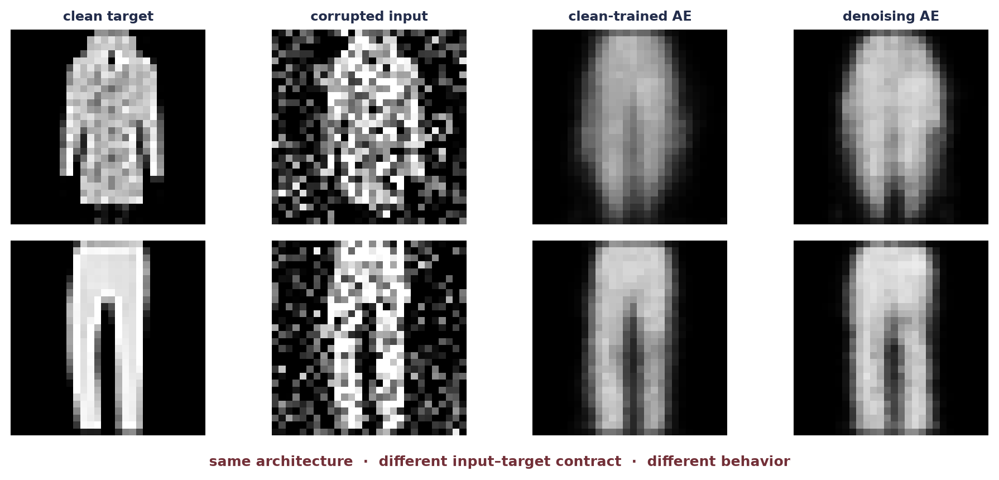

Interlude: Making PCA Learnable
Part II gave neural networks a spatial prior: local kernels share one rule across an image. The next part must handle objects whose length is not known in advance. Before we add a loop, the course takes a revealing detour—one that begins with a fixed-size object. Could an encoder compress an object into a fixed-size code and a decoder recover what mattered?
That question makes three ideas line up. Principal component analysis (PCA) is a closed-form linear encoder–decoder. Gradient descent can make the same map learnable. Nonlinearity then lets the map bend around curved data. The result is an autoencoder—and its success will expose why a one-shot encoder is not yet a variable-length process.
Numbering note. In this unnumbered interlude, HTML numbers figures and equations locally, while the PDF continues Chapter 9’s counters.
Compress, then reconstruct
Let us postpone random sampling for a moment and ask a simpler question. If an input has \(d\) coordinates, can a network preserve its important structure using only \(k<d\) numbers?
An autoencoder contains two maps. For one input \(\vect{x}\in\mathbb{R}^{d}\), the encoder produces a code \(\vect{z}\in\mathbb{R}^{k}\) and the decoder reconstructs the input:
\[ \vect{z}=f_\phi(\vect{x}), \qquad \widehat{\vect{x}}=g_\theta(\vect{z}). \tag{1}\]
The narrow code is the bottleneck. For \(n\) examples stored as rows of \(\matr{X}\in\mathbb{R}^{n\times d}\), a squared reconstruction objective is
\[ \mathcal{L}_{\mathrm{AE}}(\phi,\theta) =\frac{1}{nd}\sum_{i=1}^{n} \norm{\vect{x}_i-g_\theta(f_\phi(\vect{x}_i))}_2^2. \tag{2}\]
The target is available for free—the input supplies it—but the objective is still specific: preserve enough information to reconstruct the input. This is commonly called self-supervised because each input supplies its own target—the course lecture also groups it under unsupervised representation learning. Mean squared error is one choice—suitable when independent, equal-variance Gaussian error is a reasonable model. It is not the universal autoencoder loss.
The hourglass shape creates pressure. If \(k\) is small and the maps have controlled capacity, useful regularities may be cheaper to preserve than individual accidents. But pressure is not proof.
WarningA bottleneck is pressure, not a certificate
A real-valued low-dimensional code can still carry surprising information—and a high-capacity network can memorize a finite training set. Check held-out reconstruction, latent behavior, and the decoder between observed codes. “The bottleneck learned meaning” is an empirical claim—not a consequence of \(k<d\).
Make PCA learnable
Appendix A computes PCA from a centered singular value decomposition. Module 6 asks the more neural-network-shaped question: what if we replace that closed-form solve with weights and a reconstruction loss? The answer begins with the precise statement PCA is a linear autoencoder. Let the training rows be centered, so their mean is zero. Let \(\matr{V}_k\in\mathbb{R}^{d\times k}\) contain \(k\) orthonormal principal directions:
\[ \matr{V}_k^\top\matr{V}_k=\matr{I}_k. \]
PCA encodes and decodes by
\[ \vect{z}=\matr{V}_k^\top\vect{x}, \qquad \widehat{\vect{x}} =\matr{V}_k\vect{z} =\matr{V}_k\matr{V}_k^\top\vect{x}. \tag{3}\]
The product \(\matr{P}_k=\matr{V}_k\matr{V}_k^\top\in\mathbb{R}^{d\times d}\) is the orthogonal projector onto the principal \(k\)-dimensional subspace. Among all linear reconstruction maps of rank at most \(k\), this projector minimizes squared reconstruction error. Now replace the SVD with gradient descent. A tied linear autoencoder uses one trainable matrix \(\matr{W}\in\mathbb{R}^{d\times k}\) in both directions:
\[ \vect{z}=\matr{W}^\top\vect{x}, \qquad \widehat{\vect{x}}=\matr{W}\matr{W}^\top\vect{x}. \]
At a global optimum under the centered, squared-loss, undercomplete conditions, it can recover the same principal reconstruction subspace. That is the accurate content of “PCA is a linear autoencoder”—not a claim that every optimizer run succeeds or that every learned weight equals a particular PCA basis.
NoteSame subspace, not the same coordinates
For any orthogonal \(\matr{Q}\in\mathbb{R}^{k\times k}\),
\[ (\matr{V}_k\matr{Q})(\matr{V}_k\matr{Q})^\top =\matr{V}_k\matr{V}_k^\top. \]
The latent axes may rotate or reflect—the reconstruction projector stays fixed. For an untied encoder and decoder, any invertible latent change of basis can cancel between the two maps. Compare reconstruction products, projectors, or principal angles, not raw latent coordinates.
NoteFramework previews: SVD and \(\tanh\)
The experiment uses torch.linalg.svd only to compute PCA’s closed-form reference after the projection has been derived above; Appendix A opens that decomposition and its shape/centering contract. It also uses \(\tanh\), the smooth pointwise map \(\tanh(u)\in(-1,1)\), as the nonlinear activation inside the curved autoencoder. Chapter 3 already supplied the activation-layer idea; Chapter 10 returns to \(\tanh\) and its derivative when recurrence needs a bounded state. Neither preview grants a new unexplained black box to the intervening chapters.
What if the map could bend?
PCA gives the best flat rank-\(k\) reconstruction. What if the encoder and decoder were learnable nonlinear maps that could bend with the data?
Let us use a controlled curve with a known one-dimensional coordinate. For \(t\in[-1,1]\), define
\[ \vect{x}(t) =\left(t,\;1.5\left(t^2-\frac{1}{3}\right)\right)^\top. \tag{4}\]
The alternating grid points form train and held-out sets. PCA and a tied linear autoencoder receive a one-dimensional bottleneck, as does a nonlinear \(2\rightarrow24\rightarrow1\rightarrow24\rightarrow2\) autoencoder. The comparison is intentionally about representational shape, not parameter efficiency—the nonlinear model has far more adjustable knobs.
Experiment: rematch PCA and linear and nonlinear autoencoders on a planted curve
def planted_curve(t: Tensor) -> Tensor:
return torch.stack((t, 1.5 * (t.square() - 1.0 / 3.0)), dim=1)
def principal_projection(train_x: Tensor) -> tuple[Tensor, Tensor]:
mean = train_x.mean(dim=0)
_, _, vh = torch.linalg.svd(train_x - mean, full_matrices=False)
return mean, vh[:1].T
class CurveAutoencoder(nn.Module):
def __init__(self) -> None:
super().__init__()
self.encoder = nn.Sequential(nn.Linear(2, 24), nn.Tanh(), nn.Linear(24, 1))
self.decoder = nn.Sequential(nn.Linear(1, 24), nn.Tanh(), nn.Linear(24, 2))
def forward(self, x: Tensor) -> tuple[Tensor, Tensor]:
z = self.encoder(x)
return self.decoder(z), z
def fit_curve(seed: int) -> tuple[float, float, float, float, float, CurveAutoencoder]:
torch.manual_seed(seed)
t_all = torch.linspace(-1.0, 1.0, 513)
train_t, test_t = t_all[::2], t_all[1::2]
train_x, test_x = planted_curve(train_t), planted_curve(test_t)
mean, basis = principal_projection(train_x)
pca_reconstruction = (test_x - mean) @ basis @ basis.T + mean
pca_mse = F.mse_loss(pca_reconstruction, test_x).item()
tied_weight = nn.Parameter(torch.randn(2, 1) * 0.2)
tied_optimizer = torch.optim.Adam([tied_weight], lr=0.03)
centered_train = train_x - mean
for _ in range(1800):
tied_reconstruction = centered_train @ tied_weight @ tied_weight.T
tied_loss = F.mse_loss(tied_reconstruction, centered_train)
tied_optimizer.zero_grad()
tied_loss.backward()
tied_optimizer.step()
tied_test = (test_x - mean) @ tied_weight @ tied_weight.T + mean
tied_mse = F.mse_loss(tied_test, test_x).item()
projector_gap = torch.linalg.norm(
tied_weight @ tied_weight.T - basis @ basis.T
).item()
model = CurveAutoencoder()
optimizer = torch.optim.Adam(model.parameters(), lr=0.012)
for step in range(4000):
reconstruction, _ = model(train_x)
loss = F.mse_loss(reconstruction, train_x)
optimizer.zero_grad()
loss.backward()
optimizer.step()
if step == 2500:
for group in optimizer.param_groups:
group["lr"] = 0.003
with torch.no_grad():
nonlinear_reconstruction, z = model(test_x)
nonlinear_mse = F.mse_loss(nonlinear_reconstruction, test_x).item()
centered_z = z[:, 0] - z[:, 0].mean()
centered_t = test_t - test_t.mean()
latent_correlation = (
centered_z @ centered_t
/ torch.sqrt((centered_z @ centered_z) * (centered_t @ centered_t))
).abs().item()
return pca_mse, tied_mse, projector_gap, nonlinear_mse, latent_correlation, model
curve_rows = []
curve_models = []
for curve_seed in range(6050, 6055):
*curve_metrics, curve_model = fit_curve(curve_seed)
curve_rows.append(curve_metrics)
curve_models.append(curve_model)
curve_table = torch.tensor(curve_rows)
t_plot = torch.linspace(-1.0, 1.0, 257)
x_plot = planted_curve(t_plot)
plot_mean, plot_basis = principal_projection(planted_curve(torch.linspace(-1, 1, 257)))
pca_plot = (x_plot - plot_mean) @ plot_basis @ plot_basis.T + plot_mean
with torch.no_grad():
nonlinear_plot, z_plot = curve_models[0](x_plot)
fig, axes = plt.subplots(1, 3, figsize=(10, 4.1))
axes[0].plot(x_plot[:, 0], x_plot[:, 1], color="#B8BCC4", lw=4.0,
label="planted curve")
axes[0].plot(pca_plot[:, 0], pca_plot[:, 1], color=orange, lw=2.4,
label="PCA reconstruction")
axes[0].plot(nonlinear_plot[:, 0], nonlinear_plot[:, 1], color=green, lw=2.0,
label="nonlinear AE")
for index in range(0, x_plot.shape[0], 24):
axes[0].plot([x_plot[index, 0], pca_plot[index, 0]],
[x_plot[index, 1], pca_plot[index, 1]],
color=orange, alpha=0.35, lw=0.8)
axes[0].set_aspect("equal")
axes[0].set_title("flat projection or curved map", color=navy, weight="bold")
axes[0].legend(frameon=False, fontsize=7.4, loc="upper center")
axes[0].grid(alpha=0.15)
method_values = [curve_table[:, 0].mean(), curve_table[:, 1].mean(),
curve_table[:, 3].mean()]
axes[1].bar([0, 1, 2], method_values, color=[orange, navy, green], width=0.62)
axes[1].scatter(torch.full((5,), 2.0), curve_table[:, 3], color=wine, s=24, zorder=3)
axes[1].set_yscale("log")
axes[1].set_xticks([0, 1, 2], ["PCA", "tied\nlinear AE", "nonlinear\nAE"])
axes[1].set_ylabel("held-out MSE (log scale)")
axes[1].set_title("same bottleneck, larger map class", color=navy, weight="bold")
axes[1].grid(axis="y", alpha=0.18)
axes[2].scatter(t_plot, z_plot[:, 0], c=t_plot, cmap="viridis", s=10)
axes[2].set_xlabel("planted coordinate $t$")
axes[2].set_ylabel("learned code $z$")
axes[2].set_title("the curve is nearly unrolled", color=navy, weight="bold")
axes[2].grid(alpha=0.15)
plt.tight_layout()
plt.show()
print("seed PCA MSE tied MSE projector gap nonlinear MSE |corr(z,t)|")
for seed, row in zip(range(6050, 6055), curve_rows):
print(seed, *(f"{value:.9f}" for value in row))
print("mean", *(f"{value:.9f}" for value in curve_table.mean(dim=0).tolist()))
print("SD ", *(f"{value:.9f}" for value in curve_table.std(dim=0).tolist()))
seed PCA MSE tied MSE projector gap nonlinear MSE |corr(z,t)|
6050 0.100000030 0.100000030 0.000000000 0.000001906 0.997166909
6051 0.100000030 0.100000030 0.000000000 0.000002822 0.985270616
6052 0.100000030 0.100000030 0.000000000 0.000002622 0.998887989
6053 0.100000030 0.100000030 0.000000000 0.000004865 0.989845965
6054 0.100000030 0.100000030 0.000000000 0.000001859 0.992839221
mean 0.100000030 0.100000030 0.000000000 0.000002815 0.992802140
SD 0.000000000 0.000000000 0.000000000 0.000001223 0.005512553All five linear runs recover the principal projector at the displayed precision. The nonlinear decoder follows the curve between alternating training points, and its one dimensional code is almost monotone in the coordinate that generated the data. This is the lecture’s “PCA on steroids” picture—with an important qualification: nonlinearity enlarges the reconstruction class from flat subspaces to curved maps. It does not guarantee that the chosen code is semantic, stable outside the observed region, or unique.
The lecture makes the same point with a rolled two-dimensional surface in three dimensions. The smaller curve here makes the estimand visible and leaves us a true held-out interleaving test: did the decoder learn to follow the bend between training points? The geometry changes; the claim does not.
Learning a lower-dimensional coordinate system for data concentrated near a curved set is one form of manifold learning. The phrase names the goal—not a guarantee that every bottleneck recovers a true manifold or its preferred coordinates.
A code is not yet a distribution
The nonlinear autoencoder can reconstruct held-out points on this curve. Can we now generate by drawing an arbitrary random \(z\) and passing it through the decoder?
Nothing in Equation 2 tells us which distribution to draw from. Reconstruction trains the decoder on codes produced by the encoder. Between those codes—and especially outside their range—many decoder functions can fit the same targets. A small algebraic example makes the missing contract visible. Suppose observed codes are \(z\in\{-1,0,1\}\) and one decoder is \(g_1(z)=z^2\). A second decoder can add any multiple of a function that vanishes at all three codes:
\[ g_2(z)=z^2+0.8z(z^2-1). \]
The reconstructions agree on every observed code—yet disagree elsewhere.
Figure code: show why reconstruction alone does not identify latent sampling
latent_grid = torch.linspace(-1.45, 1.45, 400)
decoder_one = latent_grid.square()
decoder_two = latent_grid.square() + 0.8 * latent_grid * (latent_grid.square() - 1.0)
observed_codes = torch.tensor([-1.0, 0.0, 1.0])
observed_targets = observed_codes.square()
random_code = torch.tensor(0.5)
fig, ax = plt.subplots(figsize=(8.5, 3.8))
ax.plot(latent_grid, decoder_one, color=navy, lw=2.2, label="$g_1(z)$")
ax.plot(latent_grid, decoder_two, color=orange, lw=2.2, label="$g_2(z)$")
ax.scatter(observed_codes, observed_targets, s=65, color=green, edgecolor="white",
linewidth=0.8, zorder=4, label="encoded observations")
ax.axvline(random_code.item(), color=wine, ls="--", lw=1.2)
ax.scatter([random_code, random_code],
[random_code.square(), random_code.square()
+ 0.8 * random_code * (random_code.square() - 1.0)],
color=wine, s=42, zorder=4)
ax.text(0.53, 1.70, "unsupported draw $z=0.5$", color=wine, fontsize=8.8)
ax.set_xlabel("latent code $z$")
ax.set_ylabel("decoded value")
ax.set_title("equal reconstruction does not fix behavior between codes",
color=navy, weight="bold")
ax.legend(frameon=False, fontsize=8)
ax.grid(alpha=0.16)
plt.tight_layout()
plt.show()
training_gap = (
observed_codes.square()
- (observed_codes.square() + 0.8 * observed_codes * (observed_codes.square() - 1))
).abs().max()
print(f"largest decoder gap at observed codes: {training_gap.item():.1f}")
print(f"g1(0.5): {random_code.square().item():.2f}")
print(
"g2(0.5):",
f"{(random_code.square() + 0.8 * random_code * (random_code.square() - 1)).item():.2f}",
)
largest decoder gap at observed codes: 0.0
g1(0.5): 0.25
g2(0.5): -0.05
WarningReconstruction does not specify a sampler
A deterministic autoencoder may still be used inside a generative system, and one can fit a separate distribution to its codes. The narrower statement is the important one—ordinary reconstruction training supplies no built-in latent prior and no principled rule for arbitrary random draws. A code is not yet a probability distribution.
The lecture provides one useful intermediate move: same architecture, different training. A denoising autoencoder corrupts an input to \(\widetilde{\vect{x}}\) and asks the network to recover the clean \(\vect{x}\):
\[ \mathcal{L}_{\mathrm{DAE}} =\E_{\vect{x}\sim p_{\mathrm{data}},\, \widetilde{\vect{x}}\sim q(\widetilde{\vect{x}}\mid\vect{x})} \left[ \norm{\vect{x}-g_\theta(f_\phi(\widetilde{\vect{x}}))}_2^2 \right]. \tag{5}\]
Clean \(\rightarrow\) clean learns reconstruction. Under squared loss, noisy \(\rightarrow\) clean trains the output toward the conditional mean of clean inputs compatible with the corrupted observation—same architecture, different training. Different-domain input \(\rightarrow\) target uses the same contract for translation. Changing the input–target contract changes what the code must preserve.
Let the autoencoder see locally
A fully connected autoencoder flattens an image and forgets the spatial prior that Part II worked so hard to earn. A convolutional autoencoder keeps it. Its encoder uses learned local filters and stride to reduce spatial resolution; its decoder expands the code back into an image.
Here is one shape ledger. The example is deliberately small enough to train during the book build:
| Stage | Shape for one example | Role |
|---|---|---|
| image | \(1\times28\times28\) | \(784\) observed pixel values |
| stride-2 convolution | \(8\times14\times14\) | local features, half resolution |
| stride-2 convolution | \(16\times7\times7\) | broader local features |
| learned code | \(16\) | a \(49{:}1\) value-count bottleneck |
| linear expansion | \(16\times7\times7\) | seed the spatial decoder |
| transposed convolutions | \(8\times14\times14\rightarrow1\times28\times28\) | reconstruct resolution |
The expanding operator is called a transposed convolution because it is the transpose, or adjoint, of the linear map implemented by a convolution. If \(\mathcal{C}_{\matr{W}}\) denotes convolution with fixed weights, then
\[ \left\langle \mathcal{C}_{\matr{W}}(\vect{x}),\vect{y}\right\rangle = \left\langle \vect{x},\mathcal{C}_{\matr{W}}^{\top}(\vect{y})\right\rangle. \tag{6}\]
That equation says adjoint, not inverse. Stride may discard information, and learned filters need not be invertible. A transposed convolution provides the right learnable shape-changing map for the decoder; it does not mechanically undo the encoder.
We can now make “same architecture, different training” measurable. Both models below use exactly the ledger above. One sees clean images and reconstructs clean images. The other receives Gaussian-corrupted images but is scored against the clean targets. The development file is split into 900 fit and 300 validation examples; the committed 600-example shared benchmark is evaluated only after validation has selected each checkpoint. Earlier chapters already use that benchmark, so this is an endpoint reuse, not a newly sealed test. Five seeds repeat training. Labels never enter the experiment.
Experiment: compare clean and denoising input–target contracts with the same convolutional autoencoder
torch.set_default_dtype(torch.float32)
fashion_development = torch.load("../../data/fashion-train.pt")
fashion_holdout = torch.load("../../data/fashion-test.pt")
development_images = fashion_development["X"].float().unsqueeze(1) / 255.0
holdout_images = fashion_holdout["X"].float().unsqueeze(1) / 255.0
split = torch.randperm(
len(development_images), generator=torch.Generator().manual_seed(6050)
)
fit_indices, validation_indices = split[:900], split[900:]
fit_images = development_images[fit_indices]
validation_images = development_images[validation_indices]
noise_sd = 0.35
validation_noise = torch.randn(
validation_images.shape, generator=torch.Generator().manual_seed(70_050)
)
holdout_noise = torch.randn(
holdout_images.shape, generator=torch.Generator().manual_seed(70_051)
)
noisy_validation = (validation_images + noise_sd * validation_noise).clamp(0.0, 1.0)
noisy_holdout = (holdout_images + noise_sd * holdout_noise).clamp(0.0, 1.0)
class ConvolutionalAutoencoder(nn.Module):
def __init__(self, latent_dim: int = 16) -> None:
super().__init__()
self.encoder_map = nn.Sequential(
nn.Conv2d(1, 8, kernel_size=3, stride=2, padding=1),
nn.ReLU(),
nn.Conv2d(8, 16, kernel_size=3, stride=2, padding=1),
nn.ReLU(),
)
self.to_code = nn.Linear(16 * 7 * 7, latent_dim)
self.from_code = nn.Linear(latent_dim, 16 * 7 * 7)
self.decoder_map = nn.Sequential(
nn.ConvTranspose2d(16, 8, kernel_size=4, stride=2, padding=1),
nn.ReLU(),
nn.ConvTranspose2d(8, 1, kernel_size=4, stride=2, padding=1),
nn.Sigmoid(),
)
def forward(self, x: Tensor) -> tuple[Tensor, Tensor]:
z = self.to_code(self.encoder_map(x).flatten(1))
features = F.relu(self.from_code(z)).reshape(-1, 16, 7, 7)
return self.decoder_map(features), z
@torch.no_grad()
def reconstruction_mse(
model: nn.Module, inputs: Tensor, targets: Tensor
) -> float:
model.eval()
reconstruction, _ = model(inputs)
return F.mse_loss(reconstruction, targets).item()
def fit_convolutional_autoencoder(
seed: int, denoising: bool, epochs: int = 30
) -> tuple[float, float, float, ConvolutionalAutoencoder]:
torch.manual_seed(seed)
model = ConvolutionalAutoencoder()
optimizer = torch.optim.Adam(model.parameters(), lr=0.003)
order_generator = torch.Generator().manual_seed(seed + 100_000)
noise_generator = torch.Generator().manual_seed(seed + 200_000)
best_validation = float("inf")
best_state = deepcopy(model.state_dict())
for _ in range(epochs):
model.train()
order = torch.randperm(len(fit_images), generator=order_generator)
for indices in order.split(100):
targets = fit_images[indices]
if denoising:
noise = torch.randn(targets.shape, generator=noise_generator)
inputs = (targets + noise_sd * noise).clamp(0.0, 1.0)
else:
inputs = targets
reconstruction, _ = model(inputs)
loss = F.mse_loss(reconstruction, targets)
optimizer.zero_grad()
loss.backward()
optimizer.step()
validation_inputs = noisy_validation if denoising else validation_images
validation_loss = reconstruction_mse(
model, validation_inputs, validation_images
)
if validation_loss < best_validation:
best_validation = validation_loss
best_state = deepcopy(model.state_dict())
model.load_state_dict(best_state)
clean_mse = reconstruction_mse(model, holdout_images, holdout_images)
noisy_mse = reconstruction_mse(model, noisy_holdout, holdout_images)
return best_validation, clean_mse, noisy_mse, model
conv_rows: dict[bool, Tensor] = {}
conv_models: dict[bool, list[ConvolutionalAutoencoder]] = {}
for denoising in (False, True):
fitted = [
fit_convolutional_autoencoder(seed, denoising)
for seed in range(6050, 6055)
]
conv_rows[denoising] = torch.tensor([row[:3] for row in fitted])
conv_models[denoising] = [row[3] for row in fitted]
plain_model = conv_models[False][0]
denoising_model = conv_models[True][0]
example_indices = [7, 22]
with torch.no_grad():
plain_noisy_reconstruction, _ = plain_model(noisy_holdout[example_indices])
denoised_reconstruction, _ = denoising_model(noisy_holdout[example_indices])
fig, axes = plt.subplots(2, 4, figsize=(10, 4.5))
columns = [
(holdout_images[example_indices], "clean target"),
(noisy_holdout[example_indices], "corrupted input"),
(plain_noisy_reconstruction, "clean-trained AE"),
(denoised_reconstruction, "denoising AE"),
]
for column, (images, title) in enumerate(columns):
axes[0, column].set_title(title, color=navy, fontsize=9.0, weight="bold")
for row in range(2):
axes[row, column].imshow(images[row, 0].cpu(), cmap="gray", vmin=0, vmax=1)
axes[row, column].axis("off")
fig.text(
0.5, 0.02,
"same architecture · different input–target contract · different behavior",
ha="center", color=wine, fontsize=9.2, weight="bold",
)
plt.tight_layout(rect=(0, 0.05, 1, 1))
plt.show()
# A separate operator check: transposed convolution is the convolution's adjoint.
probe_x = torch.randn(2, 1, 13, 13, dtype=torch.float64)
probe_weight = torch.randn(3, 1, 3, 3, dtype=torch.float64)
probe_y = torch.randn(2, 3, 7, 7, dtype=torch.float64)
conv_x = F.conv2d(probe_x, probe_weight, stride=2, padding=1)
transpose_y = F.conv_transpose2d(
probe_y, probe_weight, stride=2, padding=1
)
left_inner_product = (conv_x * probe_y).sum()
right_inner_product = (probe_x * transpose_y).sum()
adjoint_relative_gap = (
(left_inner_product - right_inner_product).abs()
/ torch.maximum(left_inner_product.abs(), right_inner_product.abs())
)
print("arm validation clean test noisy-input test")
for denoising, label in [(False, "plain"), (True, "denoising")]:
table = conv_rows[denoising]
print(label, "mean", *(f"{value:.6f}" for value in table.mean(0).tolist()))
print(label, "SD ", *(f"{value:.6f}" for value in table.std(0).tolist()))
print("corrupted-input test MSE", f"{F.mse_loss(noisy_holdout, holdout_images):.6f}")
print("transposed-convolution adjoint relative gap", f"{adjoint_relative_gap:.2e}")
arm validation clean test noisy-input test
plain mean 0.022851 0.020701 0.033263
plain SD 0.000719 0.000565 0.003642
denoising mean 0.026020 0.026294 0.023810
denoising SD 0.000858 0.001445 0.000775
corrupted-input test MSE 0.068601
transposed-convolution adjoint relative gap 1.15e-16The denoising arm wins only the question it was trained to answer. It restores this specified corruption better, while the clean-trained arm reconstructs clean inputs better. Calling either model “the better autoencoder” would erase the experimental contract. Chapter 19 will return to denoising at many calibrated noise levels; that is where repeated, level-conditioned corruption reversal becomes one learned component of diffusion’s generative path.
Why a one-shot encoder cannot be the whole sequence model
The detour has earned a useful machine—an encoder can learn a code; a decoder can be trained to reconstruct, denoise, or translate from it. Why not encode an entire sentence into one \(k\)-dimensional vector and decode the translation?
For short, bounded objects, that design may work. The trouble is the contract:
- every input must be available before the one-shot encoder can finish;
- the code has the same width for four tokens and four thousand;
- every distinction in content and order must survive the same handoff;
- the decoder cannot revisit an earlier input detail that the code discarded.
Making \(k\) larger postpones the argument; it does not remove the fixed maximum or give the computation a streaming rule. The next chapter changes the shape of the problem. It shares one update across time,
\[ \vect{h}_t=f_\theta(\vect{h}_{t-1},\vect{x}_t), \]
so the model can accept one element at a time and stop whenever the sequence stops. Recurrence still has a finite state—later chapters will expose that bottleneck—but it turns a fixed-input network into a variable-length process. The autoencoder did not fail us. It made the missing operation visible.
NoteTwo different limitations, two different next chapters
“A one-shot encoder is not a variable-length process” motivates recurrence in Chapter 10. “A code is not yet a probability distribution” motivates the generative models in Chapter 19. Do not collapse them: one is about how evidence arrives; the other is about how new samples begin.
Okay, so — PCA became a network, then the code became a bottleneck
- An autoencoder learns an input–code–reconstruction contract. The target says what information the code is rewarded for preserving.
- PCA is the linear case under stated conditions. Center the data, use an undercomplete linear map and squared loss, and compare subspaces or projectors—not arbitrary latent coordinates.
- Gradient descent makes the projection learnable. Add depth and nonlinearity and the reconstruction map can follow curved structure; it gains capacity, not a semantic guarantee.
- Convolution preserves the spatial prior. Transposed convolution is the adjoint shape-changing operator used by the decoder, not an inverse of the encoder.
- Same architecture, different contracts, different behavior. Clean reconstruction, denoising, and translation pair inputs and targets in distinct ways.
- A one-shot handoff plants two questions. Variable-length evidence leads next to recurrence. Unsupported latent sampling waits for Chapter 19.
Sources and further reading
- Baldi and Hornik, Neural Networks and Principal Component Analysis: the qualified principal-subspace result for linear autoencoders.
- Vincent et al., Extracting and Composing Robust Features with Denoising Autoencoders: noisy-input, clean-target representation learning.
- PyTorch,
ConvTranspose2d: the framework operator and output-shape conventions used in the independently derived implementation.
Exercises
- Untie the linear maps. Replace \(\matr{W}\matr{W}^{\top}\) with an encoder \(\matr{W}_e\) and decoder \(\matr{W}_d\). Construct an invertible change of latent coordinates that changes both matrices but leaves their product unchanged.
- Audit the bend. Extend the planted curve’s test interval beyond the range used for training. Compare interpolation with extrapolation and state which claim the original interleaving split earned.
- Change the corruption. Train the convolutional autoencoder with masking noise instead of Gaussian noise. Evaluate both corruptions without retuning and explain why “denoising ability” is not one scalar property.
- Prove the adjoint check. Write a one-channel convolution as an explicit matrix for a tiny input. Verify that applying its matrix transpose matches a transposed convolution with the corresponding stride and padding.
- Stress the one-shot code. Design two sequence families that share the same final tokens but require remembering increasingly old information. Predict how a one-shot encoder and a recurrent state will fail differently as length grows.